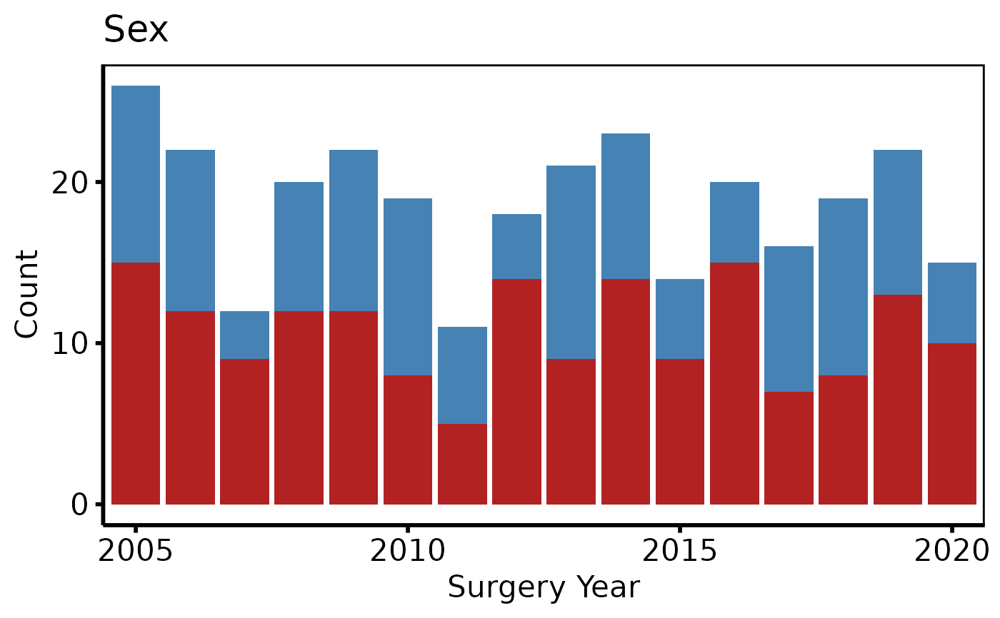
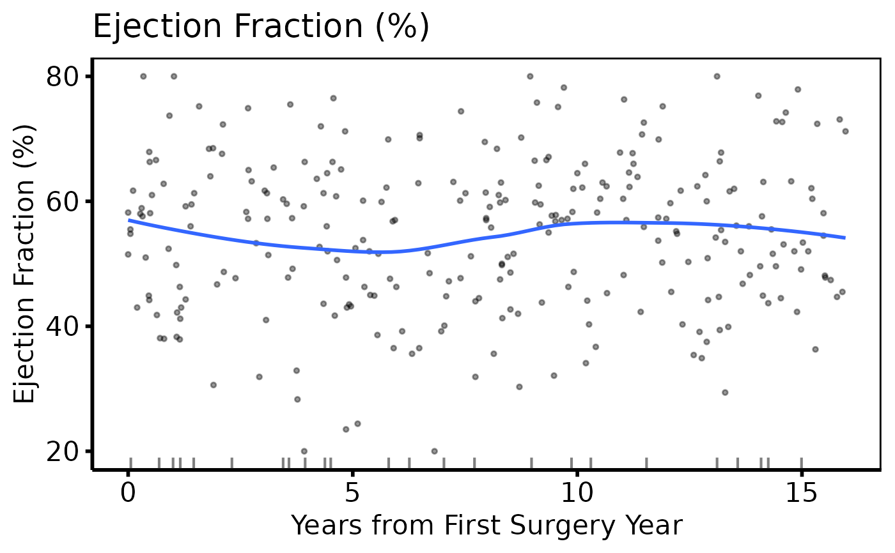

Classifies y_col using eda_classify_var, pre-processes
categorical levels (adding an explicit "(Missing)" level), and
returns an hv_eda object. Call plot.hv_eda on the
result to obtain a bare ggplot2 barplot or scatter plot that you can
decorate with colour scales and theme_hv_manuscript.
Usage
hv_eda(
data,
x_col = "year",
y_col = "ef",
y_label = NULL,
unique_limit = 6L,
show_percent = FALSE
)Arguments
- data
Data frame; one row per observation.
- x_col
Name of the reference (time/grouping) column. Used as the x-axis for both scatter and bar plots. Default
"year".- y_col
Name of the variable to plot. Default
"ef".- y_label
Optional human-readable label for the variable, used as the plot title, y-axis label (continuous), and fill-legend name (categorical). When
NULL(default),y_colis used.- unique_limit
Integer threshold passed to
eda_classify_varto distinguish categorical from continuous numeric columns. Default6.- show_percent
Logical; for categorical plots, use proportions (
position = "fill") instead of counts (position = "stack")? DefaultFALSE.
Value
An object of class c("hv_eda", "hv_data"):
$dataPre-processed data frame ready for plotting. For continuous variables: two columns
xandy. For categorical variables: columnsx(factor) andfill(factor with"(Missing)"as explicit level).$metaNamed list:
x_col,y_col,y_label,var_type("Cont","Cat_Num", or"Cat_Char"),show_percent,n_obs.$tablesFor continuous variables:
rug_data— rows wherey_colisNA, used for the rug layer. Empty list for categorical variables.
Details
Iterate over variables with lapply() after selecting columns with
eda_select_vars.
References
R templates: tp.dp.EDA_barplots_scatterplots.R,
tp.dp.EDA_barplots_scatterplots_varnames.R;
helper: Barplot_Scatterplot_Function.R
(Function_DataPlotting(), Order_Variables()).
Examples
dta <- sample_eda_data(n = 300, seed = 42)
# 1. Build data object (binary categorical)
ed <- hv_eda(dta, x_col = "year", y_col = "male", y_label = "Sex")
ed # prints var_type and observation count
#> <hv_eda>
#> Variable : male [Cat_Num]
#> Label : Sex
#> x col : year
#> N obs : 300
# 2. Bare plot -- undecorated ggplot returned by plot.hv_eda
p <- plot(ed)
# 3. Decorate: fill palette, x-axis breaks, labels, theme
p +
ggplot2::scale_fill_manual(
values = c("0" = "steelblue", "1" = "firebrick", "(Missing)" = "grey80"),
labels = c("0" = "Female", "1" = "Male", "(Missing)" = "Missing"),
name = NULL
) +
ggplot2::scale_x_discrete(breaks = seq(2005, 2020, 5)) +
ggplot2::labs(x = "Surgery Year", y = "Count") +
theme_hv_poster()

# Continuous variable -- same 3-step pattern
ed2 <- hv_eda(dta, x_col = "op_years", y_col = "ef",
y_label = "Ejection Fraction (%)")
plot(ed2) +
ggplot2::scale_colour_manual(values = c("firebrick"), guide = "none") +
ggplot2::scale_x_continuous(breaks = seq(0, 15, 5)) +
ggplot2::labs(x = "Years from First Surgery Year") +
theme_hv_poster()

# Variable selection + lapply (varnames template pattern)
cont_vars <- c(ef = "Ejection Fraction (%)",
lv_mass = "LV Mass Index (g/m\u00b2)",
peak_grad = "Peak Gradient (mmHg)")
sub_cont <- eda_select_vars(dta, c("op_years", names(cont_vars)))
p_cont <- lapply(names(cont_vars), function(cn) {
plot(hv_eda(sub_cont, x_col = "op_years", y_col = cn,
y_label = cont_vars[[cn]])) +
ggplot2::scale_colour_manual(values = c("steelblue"), guide = "none") +
ggplot2::scale_x_continuous(breaks = seq(0, 15, 5)) +
ggplot2::labs(x = "Years from First Surgery Year") +
theme_hv_poster()
})
p_cont[[1]]